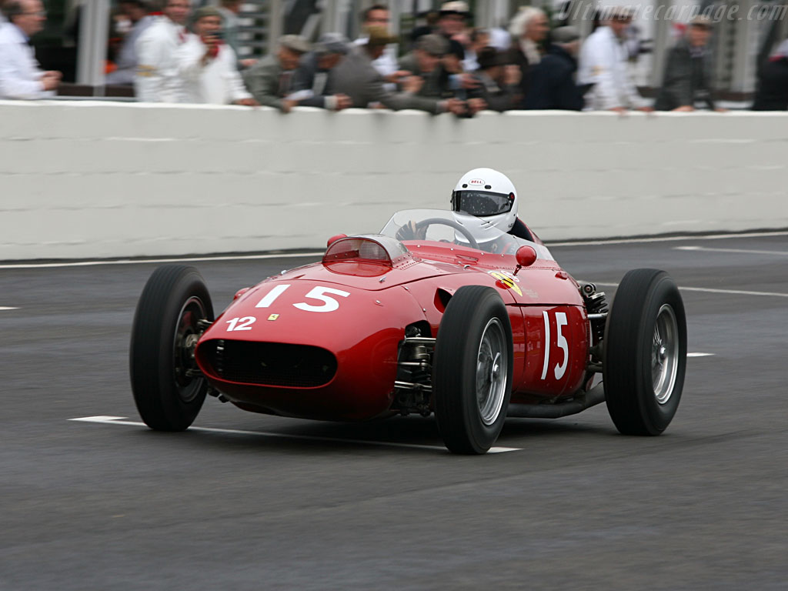
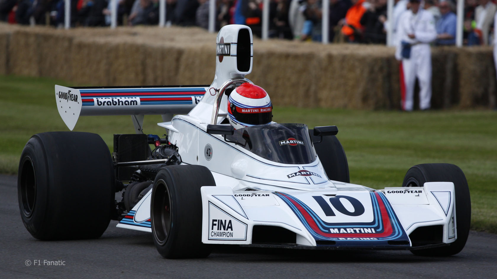
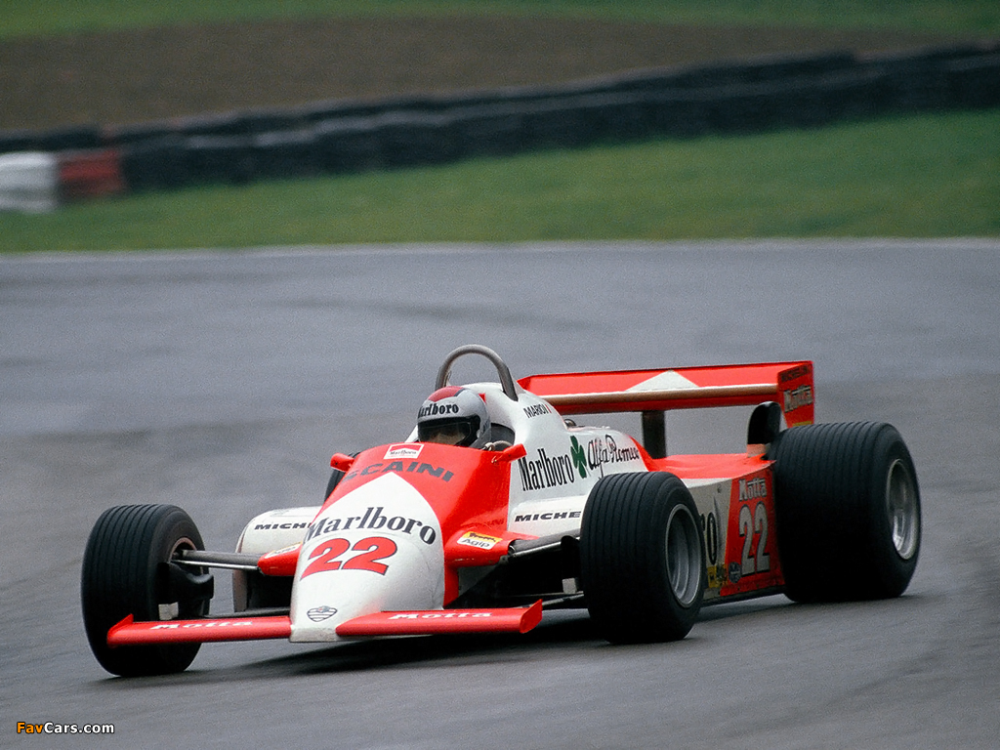
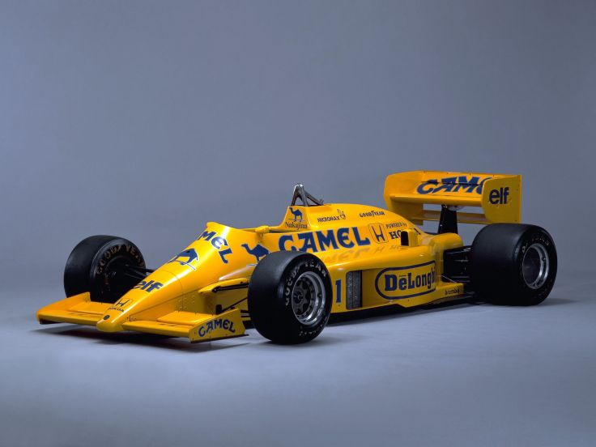
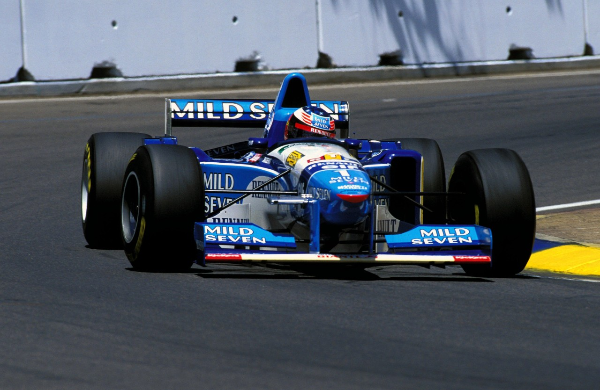
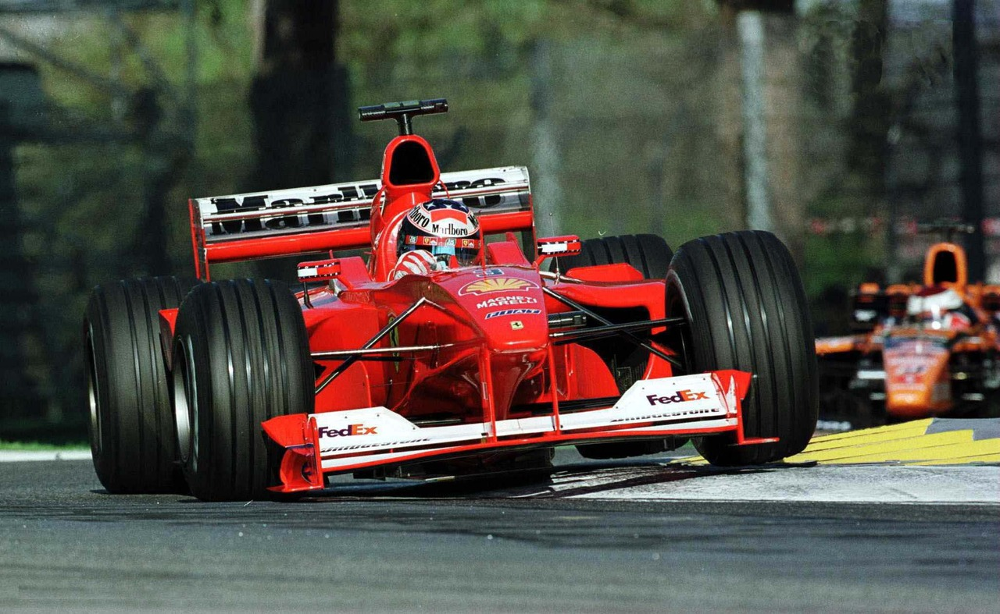
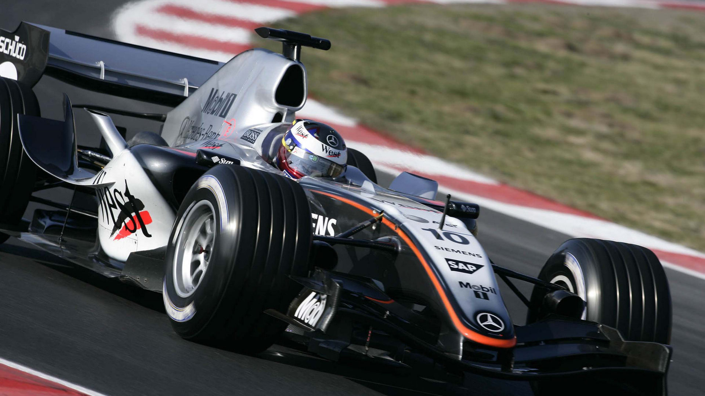
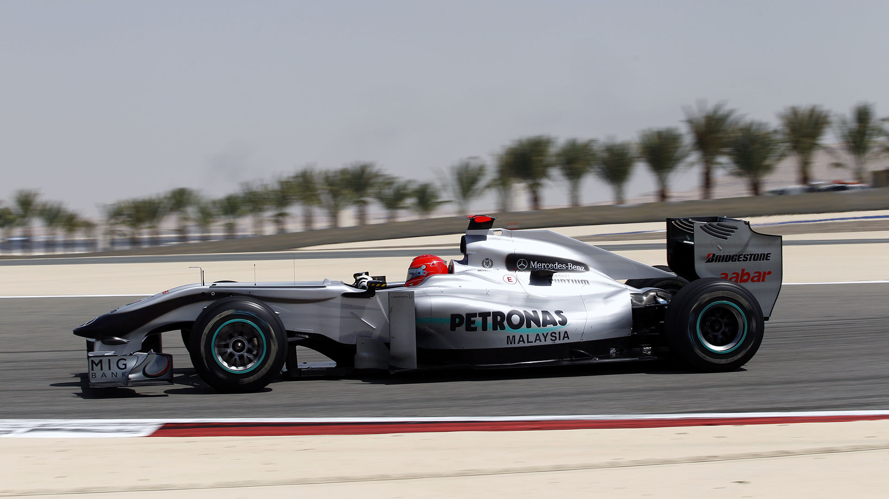
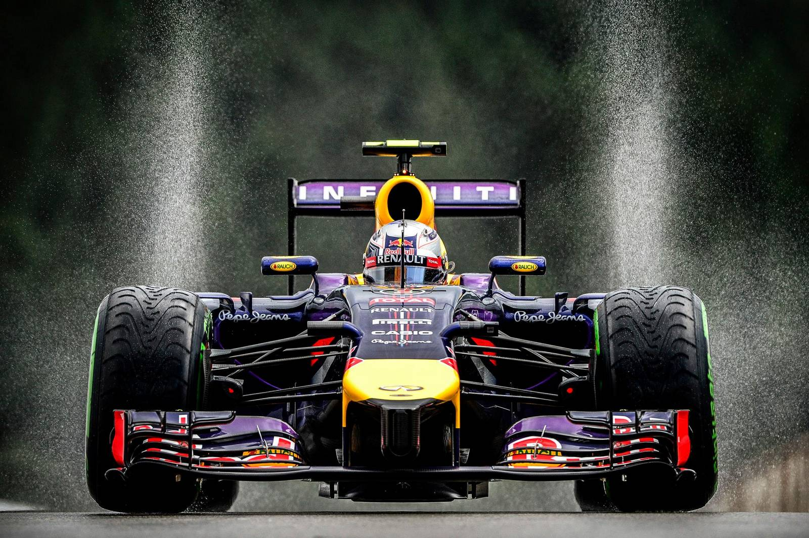
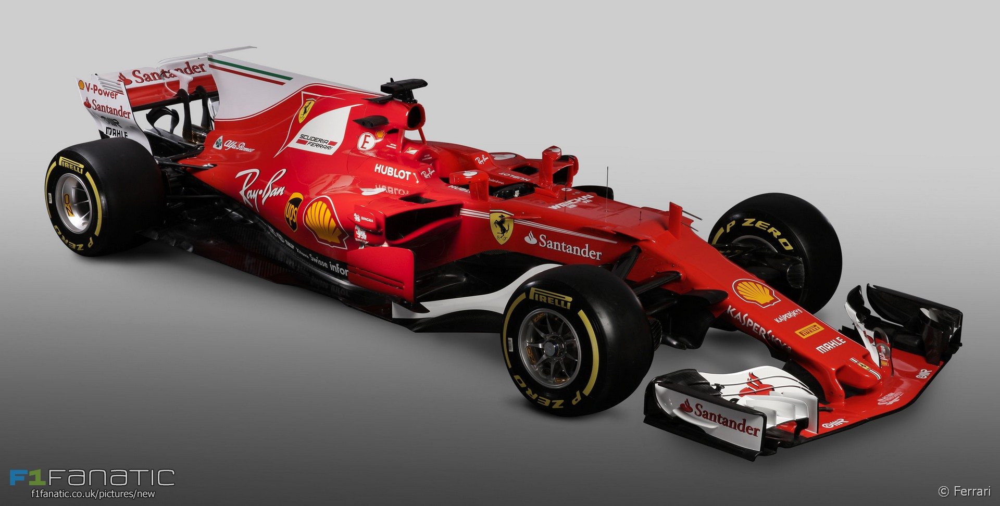

The first Formula One World Championship race is held at Silverstone in England. The cars were designed purely for speed, with front engines and drum brakes - a fascinating experience without medical back-up or any form of safety net.
Disc brakes are introduced, and a ‘relocation’ takes place - Australian Jack Brabham, in his Cooper, is the first Formula One competitor to drive a mid-engined, rather than front-engined, car.
The first safety measures are introduced to Formula One racing.

Roll-overs bars are introduced for the first time.
Flag signals are introduced. Vehicle fire prevention is advanced by improvements in fuel-tank construction. Double brake circuit becomes mandatory. The Federation Internationale de l’Automobile (FIA) assumes responsibility for safety on racing circuits. Drivers are required to wear fireproof suits. Cockpits are restructured to allow the drivers to get out more quickly.
Interrupters for electronic systems are introduced. The roll-over bar must reach five centimetres higher than the driver’s head. Additional fireproof clothing is recommended. Dan Gurney is the first driver to use a full-visor helmet in practice for the British Grand Prix.
A double fire extinguishing system is introduced.
The FIA introduces circuit inspections before races. Stipulations include double crash barriers, a safety distance of three metres between fences and spectators, as well as a wall between the pit lane and the track.
The cockpit must be designed in such a way that the driver can be rescued within five seconds.
Head rests and red rear lights are introduced. Fuel tanks contain security foam. The six-point seatbelt becomes mandatory. The FIA introduces a ‘code of conduct’ for all drivers.
Medical tests for all drivers. Integration of the fuel tank into crash and fire resistant structures.

Circuit safety walls become mandatory.
The FIA defines the standard for fireproof clothing. The presence of marshals, a medical service with a centre for resuscitation and compulsory rescue training become mandatory.
The FIA determines uniform specifications for gravel traps and defines the standard for helmets.
Only drivers with an FIA super license may enter Formula One races. A sheet-pile wall behind the driver and a front rollover bar are introduced to cars.
Larger cockpit openings are made compulsory. Niki Lauda, Carlos Reutemann and Mario Andretti compete in overalls made of five layers of fireproof material, as used by NASA, for the first time.
Permanent medical centres at circuits become compulsory.

The car’s safety cell is extended to include the driver’s foot area.
The fuel tank must be located between the driver and the engine.
Initial crash tests are used to determine the effects of frontal impact on cars.
Helicopters must be on stand-by, ready for circuit medical personnel.
The FIA regulates safety on non-permanent racing tracks.

Crash tests for the car’s safety cell and the fuel tank are introduced. The driver’s feet must be behind the front axle. A permanent FIA race director is appointed.
Track safety walls must be at least one metre high, and the pit wall must have a minimum height of 1.35 metres. Doping tests are introduced, similar to those of the International Olympic Committee.
<Larger rear-view mirrors and detachable steering wheels become mandatory. Rescue training for drivers becomes compulsory.
Tests for roll-over bars, seatbelts and survival cells introduced.
Introduction of the official Formula One safety car and stricter crash tests.
Area of drivers’ head protection material around the cockpit is increased from 80 to 400 square centimetres. The height of the rear wing is reduced, the distance from the front wing to the ground is increased and the circumference of the steering wheel is reduced. Exotic fuel mixtures are banned.
All members of the refuelling crew must wear fireproof clothing. The FIA assigns a team of experts to check how Formula One racing can be made safer by means of new technologies. Auxiliary driving aids such as traction control, ABS, power-assisted brakes and automatic transmissions are prohibited. The FIA uses computer analysis to identify 27 particularly dangerous corners that have to be made safer. Test procedures for tyre barriers become mandatory, and barriers must also be secured by rubber belts. The speed limit in the pit lane is reduced to 80 km/h in practice and 120 km/h in races. The production standard for helmets becomes stricter.
Crash tests become stricter and lateral crash tests are introduced. The FIA introduces new criteria for the acquisition of an F1 super license.

FIA accident data recorders are installed in all cars for more precise accident analysis. A rear impact test and new rear crash structures are made compulsory. Tyre barriers have to be bolted down.
Car width is reduced from 2 to 1.8 metres. Cockpits are enlarged. A driver must be able to detach the steering wheel, exit the cockpit and reattach the steering wheel, all within ten seconds. Rear-view mirrors must be at least 120x50 millimetres.
Wheels are attached to the chassis by tethers to stop them from flying off during accidents. The seat and driver can be removed together. Front crash tests become stricter. Asphalt instead of gravel is used for some run-off areas. Four medically-equipped rescue vehicles and a car for the FIA doctor are made compulsory.
Impact speed for the mandatory crash test is raised from 13 to 14 metres per second. The carbon fibre walls of the cockpit must be at least 3.5 millimetres thick. A 2.5 millimetre layer of Kevlar® fibre inside the cockpit walls is designed to resist penetration. The roll-over bar above the driver’s head is raised from 50 to 70 millimetres and must be able to withstand a lateral force of 2.4 tons.

Blue flag: driver must allow a vehicle behind him to pass when the blue flag is shown for the third time, otherwise a ten-second stop-and-go penalty will be imposed. The marshals are better protected thanks to stricter safety standards. Headrests must be mounted in accordance with FIA standards. Cockpit walls at driver’s head level must rise to the rear at a slope of at least 16 degrees. The speed during lateral impact tests is increased from seven to ten metres per second.
Time penalties (stop-and-go) can be imposed on drivers who trigger a false start, cause an accident or collision, force another driver off the track, fail to heed a blue flag three times, or intentionally impede another driver trying to overtake. Time penalties are also incurred for exceeding the speed limit in the pit lane, and may be imposed for running over chicanes if this gives an advantage to the driver in terms of track position. New lateral crash test for the rear of the cars - a force of 40kN is exerted for 30 seconds on a defined area and there may be no discernible deformation. The rear lights are increased in size to six by six centimetres.
Numerous circuits undergo reconstruction prior to the season so as to improve safety even further. Silverstone: Stowe corner’s run-off area is changed to asphalt. Nurburgring: chicane before the final corner is revised. Magny-Cours: pit exit lane is made safer, allowing cars to rejoin the circuit at racing speed. Budapest: run-off zones and safety walls in the first corner are increased in size. Suzuka: given larger run-off zones and new emergency access routes. The HANS system, which was first introduced in 2001, becomes mandatory for all drivers.
Monte Carlo is given a permanent pit lane with garages for all the teams. New tracks in Bahrain and Shanghai set new standards in terms of safety. The FIA introduces a new safety standard which sets out even higher requirements for the development of driver helmets.
Protective padding on the inside of the cockpit is thickened from 75 to 100 millimetres. Wheel tethers must be able to withstand a minimum load of 6 tons. To avoid sharp carbon fibre splinters on the track after accidents, all front wings, barge boards and small aerodynamic body parts must be given an additional outer coating of Kevlar®, or a similar material.

The impact speed for the rear crash test is increased from 12 to 15 metres per second.
If the safety car is deployed, the pit lane is closed and only opened again when the entire field has formed up in position behind the safety car. Cars are fitted with LEDs that transmit the flag signals from marshals to drivers in the cockpit. After a year’s break for reconstruction work to improve track safety, Spa returns to the calendar. The speed limit in the pit lane is reduced from 100 to 80 km/h. During a safety car phase, any lapped cars positioned between the cars running on the lead lap may overtake them and the safety car, in order to take up position at the back of the field - this is designed to prevent the leading drivers from being separated or even hindered by trailing cars at the re-start.
The FIA forms the Motor Sport Safety Development Fund, with a management committee comprising Michael Schumacher as Chairman, Max Mosley, Nick Craw, Jean Todt and Norbert Haug - within five years the fund will be utilized for a safety programme for young drivers, a training programme for officials and a programme for circuit safety. The process of appointing race stewards is changed and the stewards are provided with an improved video analysis system. All decisions after incidents will be published online by the FIA, with video evidence provided alongside rulings when required.
Experienced former Formula One drivers are recruited to assist stewards in decision making relating to race incidents. A permanent panel of three FIA stewards to attend every Grand Prix, joined by an additional local steward at each race.

To reduce the speed of Formula One cars and to facilitate overtaking, the double diffusers used since 2009 and the F-ducts developed in 2010 are prohibited. This leads to a significant reduction in downforce. The FIA prescribes minimum dimensions for the roll-over bars in order to preclude the development of extremely slim components. The wheels of the Formula One cars have to be fastened to the uprights by two tethers in future to prevent stray tyres on the track after an accident. The outside mirrors may only be attached to the sides of the cockpit in a strictly prescribed area in order to improve the drivers’ rear view visbility. In recent history the mirrors had been mounted on the outside, to the sidepods, for aerodynamic reasons, which made it difficult for the drivers to look into the mirrors. Finally, the new helmets feature an additional safety improvement, the addition of a Zylon strip across the top of the visor. This is intended to reinforce the weakest point of the otherwise tough racing helmets. The polycarbonate visor is more vulnerable than the overall shell, but the addition of the Zylon strip now doubles its impact performance.
Formula One entered its second turbocharged era in 2014. Australia was the location of the end of the first era (Adelaide 1988) and start of the second (Melbourne 2014). The series is being run under the most radical engine regulation changes since 1995. All cars entering any Formula One championship race must run with 1.6-litre single turbocharged 6-cylinder engines with a rev limit of 15,000 rpm and maximum fuel flow of 100 kg/hr. New car regulations will also be enforced, and the minimum weight regulations will be raised from 642 kg (1,415 lb) to 690 kg (1,521 lb). Ferrari, Mercedes and Renault will be producing engines for this new formula; Cosworth did not participate from 2014 and beyond.
Honda returned to supplying McLaren with engines in 2015. In-season engine development will return; the previous V8's development was frozen. The new turbo engines are reckoned to produce 600 bhp (the previous V8s produce approximately 750 hp); but the new Energy Recovery System (ERS) will be twice as powerful as the current KERS system; this new ERS system will give the drivers up to the equivalent of 160 hp when activated; the current KERS gives cars an extra 80 hp when activated.

Cars were required to be designed with a separate wastegate for exhaust gases to pass through in a bid to increase the noise of the cars following criticism since the introduction of the 2014 generation of engines. The FIA also opted to increase the number of tokens available for power unit development starting in 2016. While the initial plans would have given manufacturers fifteen tokens for the season, the number was raised to thirty-two, the same number as 2014, in order to allow struggling manufacturers such as Renault and Honda to improve their development. This decision also allowed further development on parts that were initially planned to be closed off, including the upper and lower crankcase, valve drive, crankshaft, air-valve system and ancillaries drive.
